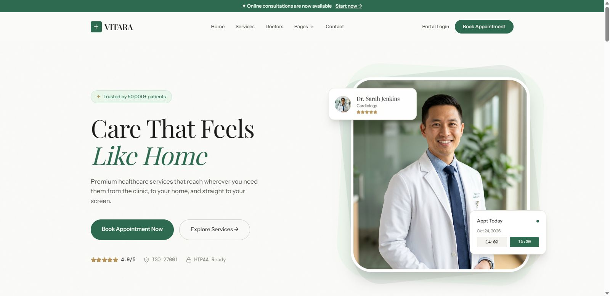
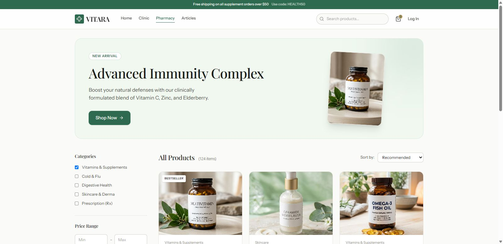
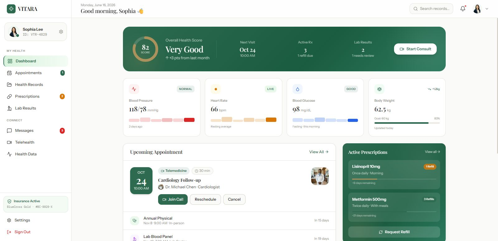

Desain Kesehatan Modern
Cocok untuk brand medical yang membutuhkan tampilan profesional, bersih, dan mudah dipercaya pengunjung.
Vitara adalah template website modern untuk klinik, rumah sakit, layanan konsultasi kesehatan, dan produk digital health. Tampilan dibuat profesional, bersih, dan mudah disesuaikan untuk kebutuhan brand kesehatan.

Cocok untuk brand medical yang membutuhkan tampilan profesional, bersih, dan mudah dipercaya pengunjung.
Struktur halaman mendukung promosi layanan, fitur digital health, CTA appointment, dan informasi produk kesehatan.
Layout dibuat adaptif agar tetap nyaman dilihat di desktop, tablet, maupun mobile.
Beberapa tampilan utama dari theme Vitara.


